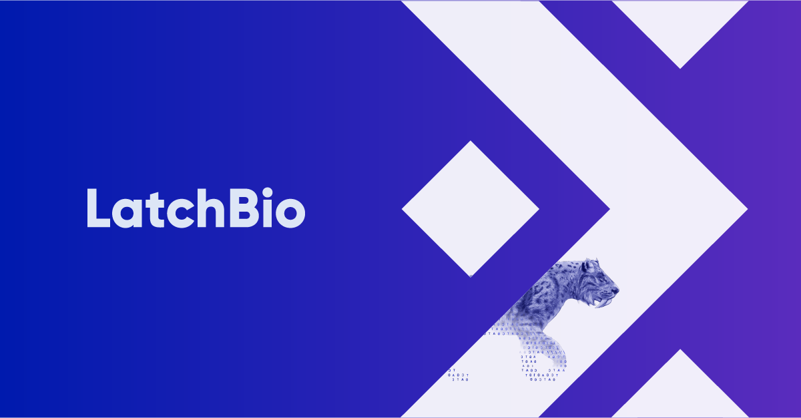

LatchBio launches the first of many evolutionary bioinformatics workflows to come

LatchBio is implementing innovative approaches to streamline bioinformatic
workflows through an easy-to-use browser-based platform. The bioinformatics workflows available on the
LatchBio platform facilitate diverse analyses across many disciplines
in the biological sciences including Gene Therapy and
Editing, Cell Therapy,
SARS-CoV-2 research, and
Next Generation Sequence analysis. “The
LatchBio platform makes trusted academic
tools accessible directly to biologists with best-in-class user interfaces and a flexible cloud-native data
infrastructure accessible from any browser,” says Kenny Workman co-founder and CTO.
 Recently, LatchBio has expanded the workflows available on our platform to
include analyses for the field of evolutionary biology through a collaboration with
Dr. Jacob L. Steenwyk,
a Howard Hughes Medical Institute
Gilliam Fellow
working in the laboratory of Dr. Antonis Rokas at
Vanderbilt University. As the debut workflow,
LatchBio and Steenwyk release
ClipKIT,
an algorithm for trimming multiple sequence alignments prior to
phylogenetic inference
(Steenwyk et al., 2020).
See and use the workflow here! Across 140,000
multiple sequence alignments that span a broad diversity of evolutionary histories, phylogenies inferred from
multiple sequence alignments trimmed with ClipKIT were shown to be accurate and robust. Multiple sequence alignments
trimmed using ClipKIT may help address a major goal in evolutionary biology — elucidating the evolutionary history
of genes, genomes, and species.
Recently, LatchBio has expanded the workflows available on our platform to
include analyses for the field of evolutionary biology through a collaboration with
Dr. Jacob L. Steenwyk,
a Howard Hughes Medical Institute
Gilliam Fellow
working in the laboratory of Dr. Antonis Rokas at
Vanderbilt University. As the debut workflow,
LatchBio and Steenwyk release
ClipKIT,
an algorithm for trimming multiple sequence alignments prior to
phylogenetic inference
(Steenwyk et al., 2020).
See and use the workflow here! Across 140,000
multiple sequence alignments that span a broad diversity of evolutionary histories, phylogenies inferred from
multiple sequence alignments trimmed with ClipKIT were shown to be accurate and robust. Multiple sequence alignments
trimmed using ClipKIT may help address a major goal in evolutionary biology — elucidating the evolutionary history
of genes, genomes, and species.
LatchBio and Steenwyk plan to continue
collaborating and build more evolutionary genomic bioinformatic
workflows on the LatchBio platform. “Working with the team at LatchBio is
incredibly exciting,” Steenwyk
said. LatchBio is solving real problems in the world of bioinformatics and
simultaneously democratizing
analyses. Now, with the click of a few buttons, scientists with varying degrees of bioinformatic experience
can easily conduct high throughput and reproducible bioinformatic analyses — that is really powerful.”
Steenwyk was one of the first user's of LatchBio's
recently released Software Development Kit (SDK), an
open-source bioinformatics workflow development kit. The LatchBio
SDK improves
upon predecessors such as WDL and nextflow by allowing Python-native
development, serverless cloud resource definition (e.g., memory or GPU
requirements), and dynamically generated and customizable front-end interfaces.
Using the LatchBio SDK,
academic python scripts become versioned, containerized,
and accessible pieces of software that can be cited and shared within research
communities.
Reference
Shafer, M. E. R., Sawh, A. N., and Schier, A. F. (2022).
Steenwyk, J. L., Buida, T. J., Li, Y., Shen, X.-X., and Rokas, A. (2020).
ClipKIT: A multiple sequence
alignment trimming software for accurate phylogenomic inference. PLOS Biol. 18, e3001007. doi:10.1371/journal.pbio.3001007.